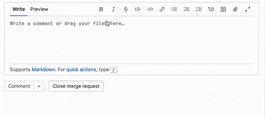
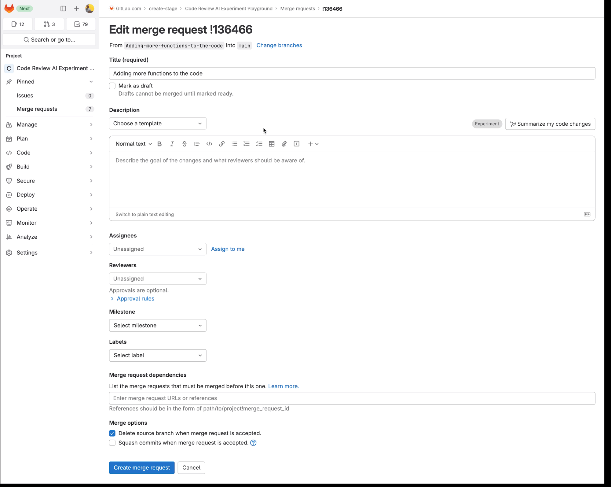

Summarize Merge Request with AI

Shipped three iterations of an AI-powered merge request summary feature over 16 months. A Qualtrics survey revealing trust and control problems led to a fundamental pivot: from AI generating summaries for reviewers to AI helping authors write better descriptions at creation time. The epic closed in May 2024 with all 24 child issues completed.
 Summary
Summary
This was January 2023, two months after ChatGPT launched. GitLab's approach to AI was deliberately different from the standard product development process: prototype and ship experiments as fast as possible to assess feasibility and potential value from real AI outputs, then mature to Beta and GA based on feedback. I joined the Code Review team, mapped the complete author/reviewer cycle from scratch, and led the design through three distinct iterations. The feature we shipped at the end was fundamentally different from the one we started with, and the journey to get there was the most instructive AI design work I have done.
The Problem
A merge request contains changes across many files and relates back to an issue being resolved. The description communicates the intent of the changes, but as review cycles progress, it becomes stale. It no longer reflects what was actually changed to achieve the solution. Reviewers and authors get out of sync.
To illustrate the scale of this problem, I found what was probably the longest merge request in GitLab's history: an enormous description, dozens of file changes, and a wall of comments accumulated over weeks. The cognitive load of getting up to speed was real and measurable.
The hypothesis: what if AI could summarize the description and commit changes into a brief, well-articulated sentence, reducing the time it takes for reviewers and authors to get up to speed?
Building Foundational Understanding
When I joined the Code Review team, I needed to rapidly understand one of GitLab's most complex workflows. Before designing anything, I mapped the complete review cycle flow between authors and reviewers in Figma. Every touchpoint: draft, ready for review, first review, changes requested, re-review, approval, and merge. This map became the baseline for all AI feature work on the team.
The systems-level view was critical. It shifted the team's conversation from "where do we put a summary button" to "how does AI fit into the entire review workflow." When I later marked AI intervention points across the map in orange, the placement decisions became much easier to reason about together.
Iteration 1: Quick Action Summary

The first version was intentionally minimal. We added a quick action in the MR comment box that triggered AI to read the merge request diff and generate a digestible summary, posted as a comment. We weren't focused on UX or design polish at this stage. We wanted to know: is AI-generated summary content useful to users at all?
We deliberately scoped out summarizing review comments to keep the question tight. We released internally and collected feedback in a dedicated issue.
What we learned
Engineers found the content helpful and gave specific, actionable feedback. Clustering that feedback revealed three distinct problems:
- Comments were not grouped. Multiple summary comments appeared scattered across the MR with no clear organization.
- No attribution. There was no indication of who requested the summary or what event triggered it.
- Wrong placement. By the time users reached the comment box at the bottom of the MR, they had already read the full description. The summary was useful content landing in the wrong moment.
The placement insight was the most important. It reframed the design problem entirely: the summary needed to reach users before they read the MR, not after.
Iteration 2: Contextual Placement
Based on the placement insight, I updated the review cycle flowchart to mark where AI could meaningfully enhance the experience. This systems view guided the v2 design goals.
For reviewers: When a review is requested, provide an AI summary in the to-do notification and email. Once they reach the MR page, provide a history of summaries in a side drawer so the context carries through from notification to page.
For authors: After review rounds, consolidate notifications into a single email with a brief summary of changes rather than multiple individual emails.
The designed solution
To-do and email notifications. When you are requested to review an MR, the AI summary appears in your to-do item and email notification. You arrive at the MR already oriented.
Summary side drawer on the MR page. Clicking the ellipsis menu reveals a "View Summary Notes" option. This opens a side drawer showing a chronological history of all summaries. Each entry includes a header with a title, an "Experimental" label, and copy stating "Summaries are written by AI" to clearly communicate that users are interacting with AI-generated content.
Chronological summary list. Organized by time, showing when commits were made, summaries auto-generated, and when reviewers submitted their reviews. A timeline of the MR's evolution rather than a static snapshot.
Email consolidation. Rather than multiple notification emails, we consolidated into a single email per MR with all changes summarized together.

The summary side drawer, showing the chronological list of AI-generated summaries with Experimental labelling and AI attribution copy.
Design decisions and tradeoffs
I had designed a versioned approach with a dropdown to show only the latest summary, with historical versions accessible via progressive disclosure. The team decided to ship the flat chronological list first to test as an experiment before adding complexity. The right call for the stage we were at.
Issues delivered
The Pivot: Trust and Control
As soon as we placed the AI-generated summary directly on the MR page, we started receiving feedback we hadn't seen before. Users reported problems with output quality. Our first instinct was to fix the prompts, and we made several improvements, but the summaries still weren't always correct. We were also dealing with real technical issues: summaries generating as random characters, encoding failures, content length problems, and issues with binary files in diffs.
After collecting more of this feedback, I ran a Qualtrics survey with a broader set of users. The survey confirmed two core problems that prompt improvements alone couldn't fix:
- Lack of user trust. Users didn't trust the AI-generated summary, even when it was accurate. The presence of an AI summary alongside a human description created doubt about which one was correct. Users reported spending time cross-checking the two rather than trusting either.
- Lack of user control. The UI gave users no way to edit, remove, or regenerate the summary. The experience felt imposed rather than assistive. Something had been added to their merge request that they hadn't authored and couldn't remove.
The consequences were layered: duplicate content on the page, potentially conflicting information, no authorship control, and even when the AI got it right, having both a human description and an AI summary covering the same ground increased mental effort with no additional value.
A colleague observed during one of the showcases that if we had known at the beginning that the AI was only around 50% accurate, we could have treated that as a design constraint and potentially skipped several iterations. We were initially confident we could improve prompts to near-perfect accuracy. That overconfidence shaped early design decisions in ways we had to unlearn.
AI in the wrong role
The pivot came from a single reframe: we had been putting AI in the wrong role. Instead of generating a separate summary for reviewers to read alongside the human description, AI should help authors write better descriptions in the first place. The problem was a stale description. The right intervention was at creation time, not review time.
In the redesigned flow, when an author pushes code and creates a merge request, the creation form offers an AI-generated summary they can choose to add to their description. The author has full control: edit it, regenerate it, remove details, add more details, or connect it with GitLab Duo.

A "Summarise my code changes" button on the MR creation form. The author can generate a summary, review it, edit it, and make it their own before saving.
The result: a cleaner MR page with a single description, a correct description because the author verified it, full control for the author, and trust maintained because the human remained in the loop.
What we turned off
Shipping the new approach meant removing what we had built: AI summaries in to-do notifications and emails, and the auto-generated summary on the MR page. The frontend was removed and the backend components cleaned up.
These weren't failures. They were necessary steps to learn that the right intervention point was upstream at creation time, not downstream during review. The epic closed in May 2024 with all 24 child issues completed.
Outcomes
- Three distinct iterations shipped over 16 months (Jan 2023 - May 2024)
- 24 issues delivered across design, frontend, backend, and infrastructure
- Qualtrics survey validating trust and control findings at scale, used to make the case for the pivot
- Feature direction pivoted from reviewer-facing summary to author-facing writing assistant
- Contributed Experiment/Beta feature badge to the Pajamas Design System
- Ran multiple usability studies on Code Review AI features with UX researcher (ux-research#2708)
- Review cycle flow mapping became a reusable baseline for other AI feature work on the team
What I learned
AI output quality is a design constraint, not just an engineering problem. Prompt improvements can raise quality, but they cannot fully replace contextual human understanding. Design needs to account for the gap from the start. Building in user control and transparency is not a nice-to-have for AI features. It is load-bearing.
The value of shipping to learn. Each iteration gave us feedback we couldn't have predicted. The quick action taught us about placement. The to-do and email integration taught us about continuity expectations. The MR page summary taught us about trust and control. Without shipping those versions, we wouldn't have arrived at the right one. This approach requires a team willing to revisit and remove decisions, which is harder than it sounds.
Workflow-driven design in complex domains. My manager at the time noted in my FY24 performance review that my workflow-driven approach was "exactly the right approach for a complex area like Code Review, to make sure we don't look at features in isolation, but how they fit into the complete context of the user." Mapping the full review cycle before designing any individual feature was what allowed me to see where AI interventions would genuinely help versus where they would add friction.
Knowing when to remove a feature takes more conviction than shipping one. Recommending that we turn off the to-do summaries, remove the MR page summary, and pivot the entire approach required strong evidence and a clear alternative. The survey data and the redesigned creation flow gave the team the confidence to make that call.